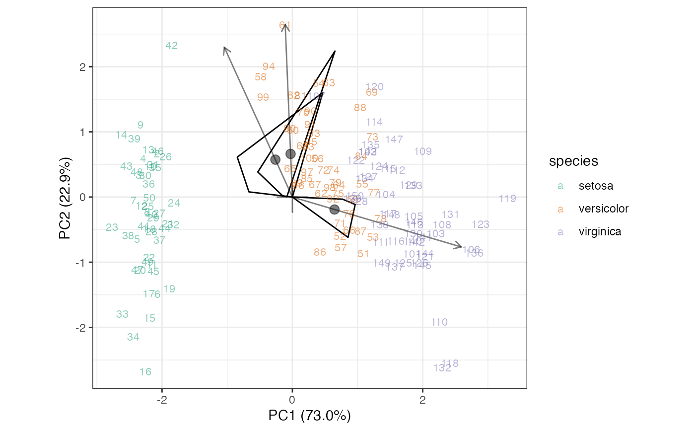

Render interpolation of new rows from columns (or vice-versa)
Source:R/geom-interpolation.r
geom_interpolation.Rdgeom_interpolation() renders a geometric construction that
interpolates a new data matrix (row or column) element from its entries to
its artificial coordinates.
Usage
geom_interpolation(
mapping = NULL,
data = NULL,
stat = "identity",
position = "identity",
new_data = NULL,
type = c("centroid", "sequence"),
arrow = default_arrow,
...,
point.fill = NA,
na.rm = FALSE,
show.legend = NA,
inherit.aes = TRUE
)Arguments
- mapping
Set of aesthetic mappings created by
aes(). If specified andinherit.aes = TRUE(the default), it is combined with the default mapping at the top level of the plot. You must supplymappingif there is no plot mapping.- data
The data to be displayed in this layer. There are three options:
If
NULL, the default, the data is inherited from the plot data as specified in the call toggplot().A
data.frame, or other object, will override the plot data. All objects will be fortified to produce a data frame. Seefortify()for which variables will be created.A
functionwill be called with a single argument, the plot data. The return value must be adata.frame, and will be used as the layer data. Afunctioncan be created from aformula(e.g.~ head(.x, 10)).- stat
The statistical transformation to use on the data for this layer. When using a
geom_*()function to construct a layer, thestatargument can be used the override the default coupling between geoms and stats. Thestatargument accepts the following:A
Statggproto subclass, for exampleStatCount.A string naming the stat. To give the stat as a string, strip the function name of the
stat_prefix. For example, to usestat_count(), give the stat as"count".For more information and other ways to specify the stat, see the layer stat documentation.
- position
A position adjustment to use on the data for this layer. This can be used in various ways, including to prevent overplotting and improving the display. The
positionargument accepts the following:The result of calling a position function, such as
position_jitter(). This method allows for passing extra arguments to the position.A string naming the position adjustment. To give the position as a string, strip the function name of the
position_prefix. For example, to useposition_jitter(), give the position as"jitter".For more information and other ways to specify the position, see the layer position documentation.
- new_data
A list (best structured as a data.frame) of row (
geom_cols_interpolation()) or column (geom_rows_interpolation()) values to interpolate.- type
Character value matched to
"centroid"or"sequence"; the type of operations used to visualize interpolation.- arrow
Specification for arrows, as created by
grid::arrow(), or elseNULLfor no arrows.- ...
Additional arguments passed to
ggplot2::layer().- point.fill
Default aesthetics for markers. Set to NULL to inherit from the data's aesthetics.
- na.rm
Passed to
ggplot2::layer().- show.legend
logical. Should this layer be included in the legends?
NA, the default, includes if any aesthetics are mapped.FALSEnever includes, andTRUEalways includes. It can also be a named logical vector to finely select the aesthetics to display.- inherit.aes
If
FALSE, overrides the default aesthetics, rather than combining with them. This is most useful for helper functions that define both data and aesthetics and shouldn't inherit behaviour from the default plot specification, e.g.borders().
Details
Interpolation answers the following question: Given a new data
element that might have appeared as a row (respectively, column) in the
singular-value-decomposed data matrix, where should we expect the marker
for this element to appear in the biplot? The solution is the vector sum of
the column (row) units weighted by their values in the new row (column).
Gower, Gardner–Lubbe, & le Roux (2011) provide two visualizations of this
calculation: a tail-to-head sequence of weighted units (type = "sequence"), and a centroid of the weighted units scaled by the number of
units (type = "centroid").
WARNING:
This layer is appropriate only with axes in standard coordinates (usually
confer_inertia(p = "rows")) and interpolative
calibration (ggbiplot(axis.type = "interpolative")).
Biplot layers
ggbiplot() uses ggplot2::fortify() internally to produce a single data
frame with a .matrix column distinguishing the subjects ("rows") and
variables ("cols"). The stat layers stat_rows() and stat_cols() simply
filter the data frame to one of these two.
The geom layers geom_rows_*() and geom_cols_*() call the corresponding
stat in order to render plot elements for the corresponding factor matrix.
geom_dims_*() selects a default matrix based on common practice, e.g.
points for rows and arrows for columns.
Aesthetics
geom_interpolation() requires the custom interpolate aesthetic, which
tells the internals which columns of the new_data parameter contain the
variables to be used for interpolation. Except in rare cases, new_data
should contain the same rows or columns as the ordinated data and
interpolate should be set to name (procured by augment_ord()).
geom_interpolation() additionally understands the following aesthetics
(required aesthetics are in bold):
alphacolourlinetypesizefillshapestrokecenter,scalegroup
References
Gower JC, Gardner–Lubbe S, & le Roux NJ (2011) Understanding Biplots. Wiley, ISBN: 978-0-470-01255-0. https://www.wiley.com/go/biplots
See also
Other geom layers:
geom_axis(),
geom_bagplot(),
geom_isoline(),
geom_lineranges(),
geom_origin(),
geom_rule(),
geom_text_radiate(),
geom_vector()
Examples
iris[, -5] %>%
prcomp(scale = TRUE) %>%
as_tbl_ord() %>%
print() -> iris_pca
#> # A tbl_ord of class 'prcomp': (150 x 4) x (4 x 4)'
#> # 4 coordinates: PC1, PC2, ..., PC4
#> #
#> # Rows (principal): [ 150 x 4 | 0 ]
#> PC1 PC2 PC3 ... |
#> |
#> 1 -2.26 -0.478 0.127 |
#> 2 -2.07 0.672 0.234 |
#> 3 -2.36 0.341 -0.0441 ... |
#> 4 -2.29 0.595 -0.0910 |
#> 5 -2.38 -0.645 -0.0157 |
#> # ℹ 145 more rows |
#>
#> #
#> # Columns (standard): [ 4 x 4 | 0 ]
#> PC1 PC2 PC3 ... |
#> |
#> 1 0.521 -0.377 0.720 |
#> 2 -0.269 -0.923 -0.244 ... |
#> 3 0.580 -0.0245 -0.142 |
#> 4 0.565 -0.0669 -0.634 |
iris_pca <- mutate_rows(iris_pca, species = iris$Species)
iris_pca <- augment_ord(iris_pca)
# sample of one of each species, with some missing measurements
new_data <- iris[c(42, 61, 110), seq(5, 1), drop = FALSE]
new_data[3L, "Sepal.Width"] <- NA
new_data[1L, "Petal.Length"] <- NA
print(new_data)
#> Species Petal.Width Petal.Length Sepal.Width Sepal.Length
#> 42 setosa 0.3 NA 2.3 4.5
#> 61 versicolor 1.0 3.5 2.0 5.0
#> 110 virginica 2.5 6.1 NA 7.2
# centroid interpolation method
iris_pca %>%
augment_ord() %>%
mutate_rows(obs = dplyr::row_number()) %>%
mutate_cols(measure = name) %>%
ggbiplot() +
theme_bw() +
scale_color_brewer(type = "qual", palette = 2) +
geom_origin(marker = "cross", alpha = .5) +
geom_cols_interpolation(
aes(center = center, scale = scale, interpolate = name), size = 3,
new_data = new_data, type = "centroid", alpha = .5
) +
geom_rows_text(aes(label = obs, color = species), alpha = .5, size = 3)

# missing an entire variable
new_data$Petal.Length <- NULL
# sequence interpolation method
iris_pca %>%
augment_ord() %>%
mutate_rows(obs = dplyr::row_number()) %>%
mutate_cols(measure = name) %>%
ggbiplot() +
theme_bw() +
scale_color_brewer(type = "qual", palette = 2) +
geom_origin(marker = "circle", alpha = .5) +
geom_cols_interpolation(
aes(center = center, scale = scale, interpolate = name,
linetype = measure),
new_data = new_data, type = "sequence", alpha = .5
) +
geom_rows_text(aes(label = obs, color = species), alpha = .5, size = 3)